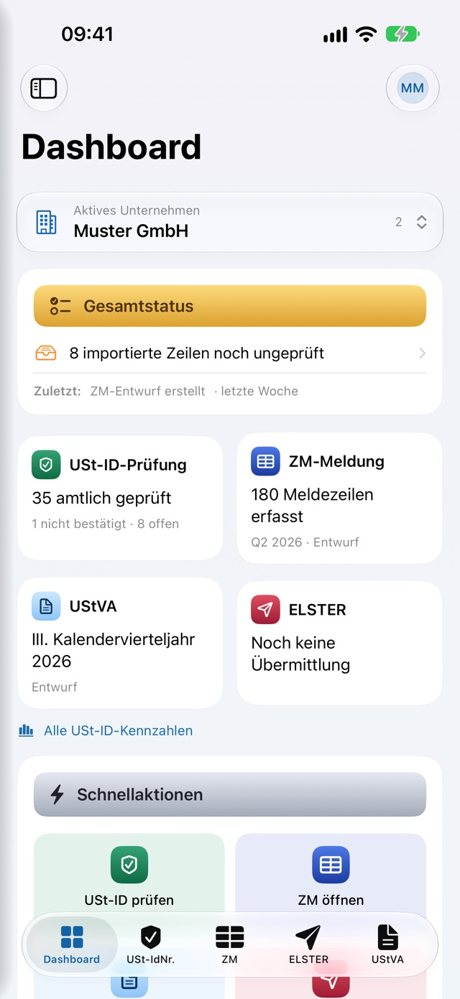

DiamVAT
USt-IdNr. prüfen, nachweisen, melden.
DiamVAT ist die native Umsatzsteuer-App für iPhone, iPad und Mac: Sie fragt USt-IdNrn. über die amtlichen Schnittstellen des Bundeszentralamts für Steuern und der EU-Datenbank VIES ab, dokumentiert jede Prüfung als archivierbares PDF-Protokoll und führt Zusammenfassende Meldung, Voranmeldung, Dauerfristverlängerung und Jahreserklärung bis zur Abgabe: amtlich prüfen, dann verbindlich an die Finanzverwaltung übermitteln – auf Wunsch geführt vom DiamAssistent in Alltagssprache. Dazu kommen Nachrichten an das Finanzamt – Einspruch, Fristverlängerung, Stundung, Belege. Für Einzel- und Kleinunternehmer, sachkundige Dritte und Steuerberater.
Prüfen statt schätzen
DiamVAT fragt die USt-IdNr. Ihres EU-Geschäftspartners über die amtliche Schnittstelle des Bundeszentralamts für Steuern nach § 18e Nr. 1 UStG ab – einfach oder qualifiziert. Das Ergebnis kommt in Sekunden, im Klartext und mit dem amtlichen Anfragezeitpunkt, nicht mit der Uhrzeit Ihres Geräts. Deutsche Nummern beantwortet das Bundeszentralamt nicht; die laufen über VIES bei der EU-Kommission und tragen sichtbar den Vermerk „Gültig – VIES-Bestätigung (nicht amtlich)“.
- Qualifizierte Bestätigung: Firmenname und Anschrift werden Feld für Feld beurteilt – stimmt überein, weicht ab, wurde nicht angefragt oder vom Mitgliedstaat nicht mitgeteilt.
- Genau dieser Abgleich ist der übliche Nachweis kaufmännischer Sorgfalt beim Vertrauensschutz nach § 6a Abs. 4 UStG – DiamVAT zeigt ihn nicht nur an, sondern schreibt ihn vollständig in den PDF-Nachweis.
- Ein abgebrochener oder technisch gescheiterter Versuch landet niemals als „ungültig“ im Nachweis: Jeder Fehlschlag bekommt einen eigenen Statuscode (offline, abgebrochen, Netz- oder Serverfehler).
- Nummer aus Text einfügen oder vom Rechnungsfoto ablesen – die Texterkennung läuft vollständig auf dem Gerät, das Bild wird nirgends gespeichert.
Der Nachweis, der beim Finanzamt zählt
Zu jeder Prüfung entsteht ein PDF-Protokoll mit allem, was ein Prüfer sehen will: eigene und geprüfte USt-IdNr., amtlicher Prüfzeitpunkt, Prüfart, Ergebnis, technischer Statuscode und Anfrage-ID. Für Massenprüfungen gibt es den mehrseitigen Sammelbericht – mit einem eigenen Abschnitt für jede Zeile, die gar nicht angefragt wurde, samt Begründung im Klartext. So geht die Rechnung auf: importiert = dokumentiert + nicht geprüft.
- Das Prüfarchiv ist nach Status filterbar und nach Nummer, Firmenname und Referenz durchsuchbar; ein Tipp öffnet den gespeicherten Einzelnachweis.
- Export als PDF-Sammelbericht und als CSV zum Abgleich mit der Buchhaltung.
- Die App löscht nie von selbst und kennt kein automatisches Ausmisten alter Prüfungen (§ 147 AO, § 14b UStG) – Löschen bleibt ausdrücklich Ihre Entscheidung.
- Die Prüfprotokolle sind archivierbar. Revisionssicher im engeren Sinne sind allein die Übermittlungsprotokolle, die auch ein „Alle lokalen Daten löschen“ überstehen.
Hunderte auf einmal
Übergeben Sie den Export aus Ihrer Buchhaltung als CSV-, Text- oder Excel-Datei: DiamVAT erkennt die Spalten und schlägt die Zuordnung vor – automatisch importiert wird nichts, Sie bestätigen die Vorschau. Anschließend läuft die Prüfung Zeile für Zeile, bewusst eine Anfrage nach der anderen statt parallel, weil parallele Anfragen über Mobilfunk im Feldtest falsche „ungültig“-Antworten lieferten.
- Jedes „ungültig“ wird automatisch ein zweites Mal geprüft, bevor es im Nachweis stehen bleibt.
- Der Fortschritt ist sichtbar, jede Zeile trägt ihr eigenes Ergebnis.
- Zeilen, die nicht angefragt wurden, verschwinden nicht: Sie stehen mit Begründung im Bericht.
- Die Massenprüfung läuft im Hintergrund weiter; eine Mitteilung meldet, wenn sie fertig ist.
Meldungen vorbereiten – bis auf die Kennzahl genau
Zusammenfassende Meldung, Voranmeldung, Dauerfristverlängerung und Jahreserklärung folgen den amtlichen Vordrucken. Gerechnet wird in der App, nicht auf einem Zettel daneben.
Mit den Länderregeln des § 18a UStG
Meldezeilen erfassen oder aus dem Import übernehmen – DiamVAT kennt die Regeln: Deutsche Nummern gehören nicht in die ZM, Drittlands-Nummern auch nicht, Nordirland (XI) nur für Warenlieferungen. Unzulässige Zeilen werden nie gelöscht, sondern sichtbar als „nicht melden“ gekennzeichnet und lassen sich jederzeit zurückholen. Am Ende steht die CSV im ELSTER-Importformat.
- Das Jahresraster zeigt die Quartale mit ihren drei Monaten daneben und darunter das Kalenderjahr; die seltenen Zweimonats-Nachmeldungen blenden Sie bei Bedarf ein – zusammen alle 21 amtlichen Meldezeiträume.
- Was Sie abgeben dürfen, ist antippbar; was noch läuft, trägt eine Uhr; was noch nicht begonnen hat, ein Schloss und beim Antippen den Grund.
- Die Frist – der 25. Tag nach Ablauf des Zeitraums – steht daneben, samt dem Hinweis, dass eine Dauerfristverlängerung für die ZM gerade nicht gilt.
- Erstmeldung und berichtigte Meldung, Monatsmeldung nach § 18a Abs. 1 Satz 2 mit Kopplungsprüfung und die 50.000-Euro-Grenze sind abgebildet.
Nach amtlichem Vordruck USt 1 A
Die Voranmeldung folgt dem amtlichen Vordruck mit allen 50 Kennzahlen in elf Abschnitten – jede mit ihrer amtlichen Nummer und einer Erklärung. Die Steuer rechnet DiamVAT selbst: Unter jeder Bemessungsgrundlage steht sofort der Steuerbetrag, oben immer die verbleibende Vorauszahlung, mit aufklappbarem Rechenweg. Auf Wunsch sehen Sie die ausgefüllte Anmeldung jederzeit als dreiseitiges Formular-PDF.
- Geprüft wird schon beim Tippen: Passt die Steuer zum Steuersatz? Fehlt zur Steuer die Bemessungsgrundlage? Ist ein Betrag negativ, der amtlich vorzeichenlos sein muss?
- Bei innergemeinschaftlichen Erwerben und §-13b-Leistungen schlägt die App die korrespondierende Vorsteuer vor – als Vorschlag, den Sie überschreiben können; danach fasst die Automatik Ihre Eingabe nie wieder an.
- Für jeden Jahrgang gilt, was dort amtlich vorgesehen ist – etwa Kennzahl 23 bis 2025 und Kennzahl 500 ab 2026.
Dauerfristverlängerung
Der Antrag nach dem amtlichen Vordruck USt 1 H (§§ 46–48 UStDV) ist ein eigener Bereich. Vierteljahreszahler stellen den reinen Antrag, Monatszahlern rechnet die App die Sondervorauszahlung aus – ein Elftel, abgerundet.
Jahreserklärung
Vordruck USt 2 A mit allen Abschnitten A bis K für die Jahrgänge 2025 und 2026, dazu die Anlage UN und die Anlage FV für Fiskalvertreter. Als Formular-PDF: sechs Seiten Hauptvordruck, jede belegte Anlage auf einer eigenen Seite.
Aus den Voranmeldungen übernehmen
Die Jahreswerte Ihrer Voranmeldungs-Entwürfe wandern auf Wunsch in die Jahreserklärung – mit Vorschau je Zeile, bevor irgendetwas geschrieben wird. Kennzahlen ohne eindeutiges Ziel weist die App ausdrücklich als Handarbeit aus.
Kleinunternehmer nach § 19 UStG
Wer Umsätze nach § 19 Abs. 1 UStG erklärt, darf viele Felder gerade nicht ausfüllen. DiamVAT prüft acht amtliche Regeln dazu und die 100.000-Euro-Grenze – als reine Wertlogik, also auch auf iPhone und iPad ohne Mac.
Beanstandungen im Klartext
Jede Beanstandung der Prüfung wird zu einer eigenen Karte mit Gewicht, betroffener Stelle und amtlichem Wortlaut – ein Tipp springt direkt in den Formularabschnitt, in die Firmendaten oder zum Zeitraum.
Eigener ZM-Import
Für die ZM gibt es einen zweiten Importweg, den Sie einmalig auf die Spaltennamen und Leistungsart-Codes Ihrer Buchhaltung einstellen. Die Vorschau zeigt bewusst auch fehlerhafte Zeilen, damit ein Erfassungsfehler nicht stillschweigend verschwindet.
Fragen beantworten statt Kennzahlen suchen
Der DiamAssistent führt in Alltagssprache durch Voranmeldung, Jahreserklärung, Zusammenfassende Meldung und Dauerfristverlängerung: Sie beantworten Fragen, DiamVAT füllt die Kennzahlen. Beim Anlegen wählen Sie „Mit dem DiamAssistent“ oder „Selbst ausfüllen“ – beides landet im selben Entwurf, und „Zum Formular“ zeigt jederzeit alle Felder.
- Jede Frage erklärt das ⓘ samt Rechtsgrundlage. Sie sehen nur die Felder, die Sie betreffen – wer keine Geschäfte mit dem Ausland hat, sieht keine Auslandsfelder.
- Steuer und Vorsteuer rechnet der Assistent selbst, auch für Leistungen ausländischer Anbieter. Am Ende stehen das Ergebnis, noch fehlende Angaben, Hinweise und die Abgabefrist.
- Er merkt sich je Unternehmen, wie Ihre Meldungen aussehen, und fragt beim nächsten Mal „Ist alles wie bei Ihrer letzten Voranmeldung?“ – dann tragen Sie nur noch die Beträge ein.
- Bei der ZM klärt er zuerst, ob Sie überhaupt melden müssen, und gleicht die Meldung mit Ihren Voranmeldungen ab. Bei der Dauerfristverlängerung rechnet er die Sondervorauszahlung aus den Voranmeldungen des Vorjahres.
Zu ELSTER – verbindlich und nachweisbar
Die Mac-App bindet die amtliche ERiC-Schnittstelle der Steuerverwaltung ein (Fassung 44.3.6.0) und prüft ohne jeden Netzkontakt; iPhone und iPad erreichen dieselbe Prüfbibliothek über den Übermittlungsdienst von DiamVAT auf einem Server in Deutschland – Zertifikat und PIN reisen in einem verschlüsselten Umschlag, der Dienst speichert nichts und führt kein Konto. Die amtliche Prüfung beanstandet Ihre Meldung wortgleich so, wie es der Annahmeserver täte. Danach übermitteln Sie mit Ihrem eigenen ELSTER-Zertifikat an die Finanzverwaltung – verbindlich, mit steuerlicher Wirkung und nur auf Ihre Aktion.
- Vor dem Senden zeigt ein Übersichtsblatt alle Angaben: Unternehmen, Steuernummer, Zeitraum, Empfänger und Beträge. Erst Ihre Bestätigung sendet. Beim ersten Mal je Unternehmen nehmen Sie einmalig zur Kenntnis, dass Übermittlungen verbindlich sind.
- Eine Meldung, die für denselben Zeitraum schon übermittelt wurde, sperrt die App gegen eine zweite Abgabe. Nach der Abgabe zeigt die Karte Datum und Transferticket; ändern lässt sich die Meldung dann nur noch über eine berichtigte Meldung.
- Das ELSTER-Zertifikat (.pfx) wird beim Hinterlegen auf Echtheit und PIN geprüft, Inhaber und Gültigkeit werden angezeigt. Die PIN bleibt gerätelokal hinter Face ID oder Touch ID, oder Sie geben sie bei jeder Übermittlung neu ein; die Zertifikatsdatei selbst wandert bewusst über den iCloud-Schlüsselbund.
- Jede angenommene Übermittlung legt ein Protokoll ab: Sendedatum, Empfänger – Ihr Finanzamt beziehungsweise das Bundeszentralamt für Steuern –, Zeitraum, Zertifikat, Transferticket, die Werte aus dem gesendeten Datensatz und die Serverantwort. Es steht als PDF bereit und überlebt das Löschen des Entwurfs ebenso wie „Alle lokalen Daten löschen“.
- Die rechtlichen Hinweise der Finanzverwaltung – das Schreiben zu den Artikeln 12 bis 14 DSGVO, der wörtliche Datenschutzhinweis, der Hinweis auf lokal bleibende Protokolldateien und die Empfehlung zur Datensicherung – werden vor der ersten Nutzung angezeigt und bestätigt, mit Datum und Dokumentversion, und bleiben jederzeit abrufbar.
- Bei der Wirtschafts-Identifikationsnummer trennt die App das fünfstellige Unterscheidungsmerkmal automatisch ab, weil die amtlichen Felder nur DE und neun Ziffern annehmen. Fehlt die Angabe, übernimmt die App den Stammteil Ihrer USt-IdNr. – beide Nummern sind identisch.
- iPhone und iPad
- iOS bzw. iPadOS 26: erfassen, rechnen, Formular-PDFs erzeugen, amtlich prüfen und übermitteln – die amtliche Prüfbibliothek läuft dafür im Übermittlungsdienst von DiamVAT auf einem Server in Deutschland. Erfassen, Rechnen, Vorprüfung und Formular-PDFs gehen auch ohne Internetverbindung. Die Entwürfe gleichen sich über iCloud mit dem Mac ab.
- Mac
- macOS 26: amtliche Prüfung und Übermittlung direkt in der App, ohne Dienst.
- Warum ein Dienst
- Die ERiC-Schnittstelle der Finanzverwaltung gibt es nur für Desktop-Systeme; für iOS und iPadOS wird sie nicht angeboten. Deshalb betreibt DiamVAT sie für iPhone und iPad auf einem eigenen Server bei der Hetzner Online GmbH in Nürnberg. Der Dienst prüft und übermittelt nur auf Ihre Aktion, legt nichts ab und braucht kein Konto; Sie stimmen ihm beim Hinterlegen des Zertifikats zu.
- Was Sie mitbringen
- Ihr eigenes ELSTER-Zertifikat (.pfx) samt PIN – die Zertifikatsdatei erhalten Sie bei der Registrierung in Mein ELSTER. Die Hersteller-Kennnummer ist fest im Produkt hinterlegt, dafür müssen Sie nichts eintragen.
- Sprache
- Die Oberfläche gibt es auf Deutsch und Englisch. Amtliche Vordrucke, Kennzahl-Bezeichnungen und Übermittlungsprotokolle bleiben deutsch.
Einspruch, Antrag, Belege – direkt aus der App
Was Sie sonst in Mein ELSTER als Formular ausfüllen, geht aus DiamVAT denselben Weg wie die Meldungen: amtlich geprüft, mit Ihrem Zertifikat übermittelt und mit Protokoll und Transferticket belegt. Ein eigener Bereich in der Seitenleiste sammelt alle Nachrichten an das Finanzamt.
- Einspruch gegen einen Bescheid, mit Nachtrag und Rücknahme und auf Wunsch mit Antrag auf Aussetzung der Vollziehung. Die App rechnet die Einspruchsfrist aus dem Bescheiddatum.
- Antrag auf Fristverlängerung für eine Steuererklärung oder Voranmeldung und Antrag auf Stundung – als Verrechnung gegen eine erwartete Erstattung oder formfrei mit Begründung.
- Freie Nachricht an das Finanzamt und Belegnachreichung zur Umsatzsteuer – mit bis zu 20 PDF-Anhängen je Sendung.
Mehrere Unternehmen, ein Überblick
Legen Sie beliebig viele Unternehmen an, jedes mit eigener USt-IdNr., Steuernummer, Rechtsform, Kurznamen und Notizen. Das aktive Unternehmen bestimmt, was die App zeigt – Prüfverlauf, Importe, ZM-Zeilen, Voranmeldungen und Erklärungen gehören immer zu ihm. Gewechselt wird oben im Dashboard oder in der Seitenleiste.
- Das Dashboard ist die erste Ansicht: sieben Kennzahl-Kacheln, Schnellaktionen, offene Hinweise, die letzten Prüfungen und Importe sowie der Stand der ZM. „Amtlich geprüft“ zählt dabei bewusst ohne die VIES-Auskünfte.
- Die Kacheln entstehen über Zählabfragen – der Aufbau bleibt gleich schnell, ob 500 oder 5.000 Datensätze im Archiv liegen.
- Sie tippen die Steuernummer so ein, wie sie auf dem Bescheid steht; DiamVAT rechnet sie in das 13-stellige ELSTER-Format um – bestätigt für alle 16 Bundesländer. Zusätzlich nennt die App das Finanzamt aus dem amtlichen Verzeichnis mit 746 Ämtern.
- Dieselbe USt-IdNr. bei zwei Unternehmen meldet die App als Fehler und sperrt die Übermittlung: Zwei Unternehmen können nicht unter einer USt-IdNr. melden.
- Umsatzsteuerliche Organschaft: Organträger und Organgesellschaften bilden einen Organkreis, für den DiamVAT die konsolidierte Voranmeldung erstellt.

So, wie Sie es mögen
DiamVAT teilt die Gestaltungsschicht aller DiamApps – und der Ergebnis-Status bleibt dabei immer voll lesbar.
Hintergrundbilder
Sechs mitgelieferte, bewusst schlichte Hintergründe – Nebelblau, Diamant, Papier, Graphit, Salbei, Horizont – oder Ihr eigenes Foto. Für alle Bereiche gemeinsam oder für Dashboard, Prüfen, ZM und ELSTER einzeln, jeweils mit eigenem Deckkraft-Regler (Vorgabe 0,25).
Schrift je Bereich
Sechs Schriften von San Francisco über New York und Charter bis Georgia und Palatino, dazu Titel- und Textgröße – je Bereich einstellbar, mit Live-Vorschau.
Farben und Karten
Sechs Edelsteinfarben – Diamant, Saphir, Rubin, Smaragd, Gold und Silber – für Akzent, Karten, Kartentitel und Jahresblöcke, auf Wunsch eine eigene Farbe je Bereich. Dazu Glas oder flache Karten, Deckkraft für Karten und Schrift und ein Eckenradius von kantig bis rund; die Vorschau darüber verändert sich sofort mit.
Hell, dunkel oder System
Die Helligkeit folgt dem System oder steht fest. Ergebnis-Status und Formulare bleiben dabei immer voll lesbar, egal wie transparent Sie es mögen.
Zwölf App-Symbole
Diamant, Rubin, Saphir, Smaragd, Gold oder Silber, jeweils auf hellem oder auf tiefdunklem Grund – alle pixelgenau aus demselben Motiv. Die Wahl bleibt bewusst eine Einstellung dieses Geräts.
Alles anordnen
Welche Karten auf dem Dashboard stehen, welche zwei bis fünf Bereiche unten in der Leiste liegen, wie die Seitenleiste gegliedert ist – bis hin zur Reihenfolge der vier Entwurfs-Karten in der ELSTER-Zentrale. Ausgeblendete Bereiche bleiben über die Seitenleiste erreichbar, und die Anordnungen wandern über iCloud mit.
Ihre Daten bleiben Ihre
Prüfverlauf, Importe, ZM-Zeilen, Entwürfe, Unternehmen und Ihre Design- und Navigationseinstellungen gleichen sich über Ihr privates iCloud-Konto zwischen Ihren Geräten ab – verschlüsselt bei Apple, ohne Server des Herstellers. Nur die amtliche Prüfung und die Übermittlung von iPhone und iPad laufen über den Übermittlungsdienst von DiamVAT, der nichts speichert. Datei am Mac importieren, Prüfung am iPhone starten: derselbe Stand überall.
Zustimmung vor dem Abgleich
Beim Einschalten sagt die App ausdrücklich, dass auch sensible Unternehmensdaten mitgehen, und wartet auf Ihre Zustimmung. Wirksam wird die Umstellung nach einem Neustart der App.
Bewusst gerätelokal
Nicht mit: das App-Symbol, die Zertifikats-PIN, das aktive Unternehmen und der eingestellte ZM-Meldezeitraum – ein herüberkommender Zeitraum würde eine laufende Erfassung stumm umetikettieren.
Diagnose ohne Preisgabe
Das lokale Diagnoseprotokoll zeigt Status, Antwortcode, Dauer und Transportfehler. Beim Teilen gibt es einen eigenen Weg, der die USt-IdNrn. maskiert – gedacht für Berufsgeheimnisträger nach § 203 StGB.
App-Sperre
Auf Wunsch öffnet sich DiamVAT nur mit Face ID oder Touch ID.
Sicherung
Unter Einstellungen → iCloud & Sicherung exportieren Sie Ihren Bestand als Datei und spielen ihn bei Bedarf wieder ein – auch ganz ohne iCloud.
Weitere Einzelheiten
Kleinigkeiten, die im Alltag den Unterschied machen.
Compliance-Verlauf
Prüfungen, Importe, ZM- und Voranmeldungs-Entwürfe sowie alle angenommenen Übermittlungen laufen in einer Zeitleiste zusammen, mit Filtern und Suche. Der Verlauf ist ein Arbeitsüberblick – die belastbaren Nachweise bleiben das Prüfarchiv und die Übermittlungsprotokolle.
Ein Auftrag, ein Eintrag
Eine Massenprüfung erscheint im Verlauf als ein Auftrag mit korrekten Zählern; ein Tipp öffnet den gespeicherten Einzelnachweis.
CSV, sauber gebaut
Der CSV-Export folgt RFC 4180 – Trennzeichen, Anführungszeichen und Zeilenumbrüche in Feldern werden korrekt behandelt, damit die Buchhaltung die Datei ohne Nacharbeit einliest.
Anleitungen und zwei Aufnahmen
23 Schritt-für-Schritt-Anleitungen – von der einfachen Prüfung über ZM, Voranmeldung, Jahreserklärung und den DiamAssistent bis zu Einspruch, Stundung und Sicherung, einschließlich der Frage, welchen Meldezeitraum Sie überhaupt haben. Dazu zwei echte Bildschirmaufnahmen aus der App, unter einer Minute, ohne Autoplay und ohne Netzverbindung.
Am großen Bildschirm
Der Mac hat eine echte Systemseitenleiste mit richtigen Inhaltszielen statt Blättern. Auf iPad und Mac stehen bei Voranmeldung und Jahreserklärung die Abschnitte links und das Formular rechts.
Ein Zertifikat je Unternehmen
Alle vier Meldungsarten arbeiten mit demselben aktiven Zertifikat; jedes Unternehmen kann zusätzlich ein bevorzugtes Zertifikat hinterlegt haben.
ZM-Entwurf als Schnappschuss
Ein ZM-Entwurf friert die aggregierten Zeilen zum Zeitpunkt der Erstellung ein – so können mehrere Stände eines Quartals nebeneinander bestehen.
Archivieren oder löschen
Ein Unternehmen lässt sich archivieren – mit allen Daten und jederzeit wiederherstellbar – oder nach einer Rückfrage endgültig entfernen. Die Übermittlungsprotokolle bleiben dabei erhalten, weil sie aufbewahrungspflichtig sind.
Basic und Pro
Laden und Basic sind kostenlos. DiamVAT Pro ist ein Einmalkauf – kein Abo und in keiner Version Werbung. Der Kauf gilt auf iPhone, iPad und Mac mit derselben Apple-ID.
Basic – dauerhaft kostenlos
Formatprüfung ohne Grenze, zehn amtliche Prüfungen von USt-IdNrn., Importe bis zehn Zeilen und alle Meldungsmasken mit Berechnung, Vorprüfung und Formular-PDF. Kleinunternehmer nach § 19 UStG übermitteln ihre Jahreserklärung einmal im Jahr auch mit Basic; dazu ist eine Nachricht an das Finanzamt je Unternehmen und Jahr frei.
Pro – einmalig 0,99 €
Die Übermittlung aller Meldungen an die Finanzverwaltung, unbegrenzte amtliche Prüfungen und Importe, die Ergebnis-Exporte, der ZM-CSV-Assistent, die PDF-Protokolle und die Foto-Erkennung.
14 Tage kostenlos testen
Die Testphase schaltet alle Pro-Funktionen 14 Tage frei. Sie kostet 0 €, endet von selbst und wird nicht abgebucht – einmal je Apple-ID.
Rechtliche Hinweise
DiamVAT ist ein Software-Werkzeug zur Prüfung und Aufbereitung von Daten. Es leistet keine Hilfeleistung in Steuersachen im Sinne des Steuerberatungsgesetzes und ersetzt keine steuerliche Beratung. Für die Richtigkeit und Vollständigkeit der erfassten und übermittelten Daten bleibt die Nutzerin oder der Nutzer verantwortlich.
ELSTER ist eine Marke des Freistaats Bayern. DiamVAT ist ein unabhängiges Produkt und steht in keiner Verbindung zur Finanzverwaltung; die Nennung dient allein dem Hinweis auf die Eignung zur Verwendung mit ELSTER.
Eine Übermittlung mit DiamVAT ist verbindlich: Sie geht mit Ihrem eigenen Zertifikat an die Finanzverwaltung und hat steuerliche Wirkung. Den Eingang belegt das Transferticket im Übermittlungsprotokoll. Für die Nutzung gelten die Nutzungsbedingungen von DiamVAT.
Auch eine qualifizierte Bestätigung nach § 18e UStG ist kein Haftungsfreibrief: Sie dokumentiert die Auskunft der Verwaltung zu einem bestimmten Zeitpunkt, mehr nicht. Über die Steuerbefreiung einer Lieferung entscheidet der Sachverhalt, nicht die Abfrage.
Ehrlich gesagt
Diese Grenzen hat die aktuelle Fassung – und wir nennen sie lieber hier, als dass Sie sie später entdecken:
- Eine Übermittlung lässt sich nicht zurückholen, nur durch eine berichtigte Meldung ersetzen. Sehen Sie das Übersichtsblatt deshalb in Ruhe durch.
- Mein ELSTER zeigt Übermittlungen aus Apps nicht unter „Übermittelte Formulare“. Den Nachweis führt das Transferticket im Übermittlungsprotokoll von DiamVAT.
- Deutsche USt-IdNrn. laufen über VIES, ohne Firmendaten-Abgleich. Nur die Auskunft des Bundeszentralamts zu ausländischen Nummern kann den Vertrauensschutz nach § 6a Abs. 4 UStG tragen; die App kennzeichnet das überall.
- Die Prüfung der Steuernummer sagt nur, dass sie formal richtig aufgebaut ist – nicht, dass sie tatsächlich vergeben wurde.
- Die App entscheidet nicht, ob ein Umsatz meldepflichtig ist – sie kennt den Warenweg nicht. Sie warnt und schlägt vor, entschieden wird von Ihnen.
- Voranmeldung und Jahreserklärung gibt es für die Jahrgänge 2025 und 2026; der Jahr-Auswähler bietet nur Jahre an, für die die amtliche Prüfbibliothek bereitsteht.
- Die umsatzsteuerliche Organschaft deckt die konsolidierte Voranmeldung ab; eine zusammengeführte Jahreserklärung des Organkreises gibt es noch nicht.
- Bei der Zusammenfassenden Meldung fehlen Angaben zur Konsignationslagerregelung (§ 6b UStG); Elma5 und ZM über Elma5 sind bewusst ausgeschlossen.
- Eine Stundung beantragt DiamVAT als Verrechnung mit einer erwarteten Erstattung oder formfrei als Nachricht mit Begründung; den ausführlichen Stundungsantrag mit Fragebogen gibt es nicht.
- Die Fristenberechnung kennt nur die neun bundesweiten Feiertage; Landesfeiertage bleiben unberücksichtigt, die App nennt in solchen Fällen den bundesweit sicheren Tag.
- Der Compliance-Verlauf ist kein lückenloses Prüfprotokoll: Gelöschte Entwürfe verschwinden daraus. Die belastbaren Nachweise sind das Prüfarchiv und die Übermittlungsprotokolle.
- Die Anordnung von Reiterleiste und Seitenleiste gilt für iPhone und iPad; am Mac bleibt die feste Seitenleiste mit allen Bereichen.
- Die Oberfläche gibt es auf Deutsch und Englisch; amtliche Vordrucke, Kennzahl-Bezeichnungen und Übermittlungsprotokolle bleiben deutsch.
- Vorausgesetzt werden iOS bzw. iPadOS 26 und macOS 26; ältere Geräte werden nicht unterstützt.